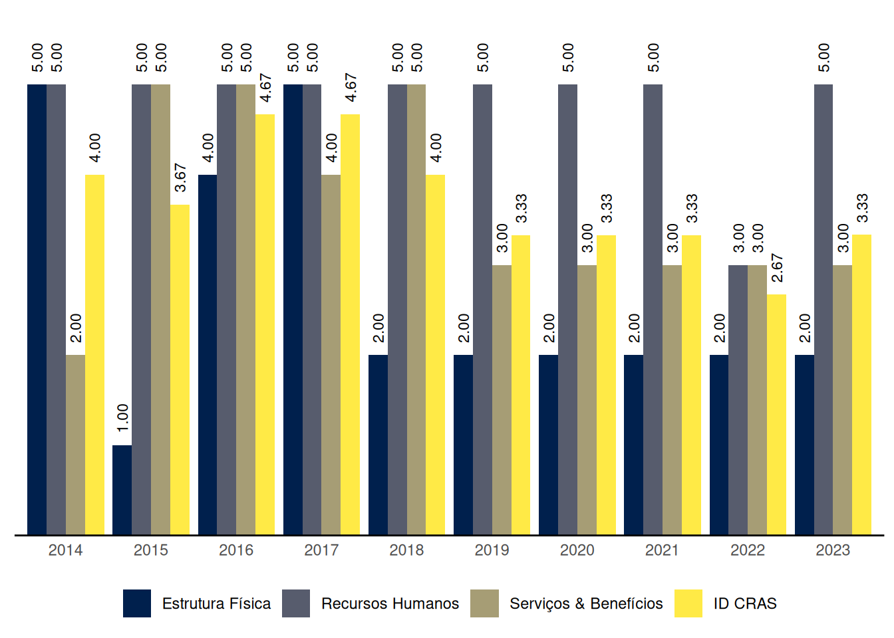

Santo Expedito do Sul
Relatório de Indicadores Censo SUAS 2023 do município de Santo Expedito do Sul, Rio Grande do Sul
1 ID CRAS: Índice de Desenvolvimento do CRAS
O ID CRAS é um indicador sintético que retrata o grau de desenvolvimento do CRAS. Ele é composto por três dimensões: Estrutura Física, Recursos Humanos e Serviços & Benefícios. Em cada dimensão é atribuída uma nota de 1 a 5 de acordo com critérios indicativos do nível de desenvolvimento do CRAS, sendo 5 o nível máximo de desenvolvimento. O ID CRAS é a média das notas alcançadas nas três dimensões.
O Gráfico 1 mostra a evolução das médias do ID CRAS ao longo dos anos no município de Santo Expedito do Sul, Rio Grande do Sul.
| Capacidade de até: | Quantidade |
|---|---|
| 2.500 famílias referenciadas | 1 |
| 3.500 famílias referenciadas | 0 |
| 5.000 famílias referenciadas | 0 |
As seções a seguir apresentam os resultados do município de Santo Expedito do Sul em cada uma das dimensões do ID CRAS, bem como os requisitos para se alcançar os níveis superiores.
1.1 ID CRAS: Dimensão Estrutura Física
1.1.1 CRAS com capacidade de referenciamento para até 2.500 ou 3.500 famílias
Na dimensão Estrutura Física, o nível de ID do CRAS com capacidade de referenciamento para até 2.500 ou 3.500 famílias no município de Santo Expedito do Sul é 2.
O CRAS de nível 2, com capacidade de referenciamento para até 2.500 ou 3.500 famílias, na dimensão Estrutura Física:
- Possui no mínimo 2 salas de atendimento; e
- Possui pelo menos 1 banheiro.
Para alcançar o nível 3 na dimensão Estrutura Física, o CRAS com capacidade de referenciamento para até 2.500 ou 3.500 famílias precisa, além dos requisitos do nível 2:
- Possuir recepção; e
- Possuir acessibilidade, ao menos parcial.
1.1.2 CRAS com capacidade de referenciamento para até 5.000 famílias
Santo Expedito do Sul não tem CRAS com capacidade de referenciamento para até 5.000 famílias.
1.2 ID CRAS: Dimensão Recursos Humanos
1.2.1 CRAS com capacidade de referenciamento para até 2.500 famílias
Na dimensão Recursos Humanos, o nível de ID do CRAS com capacidade de referenciamento para até 2.500 famílias no município de Santo Expedito do Sul é 5.
O CRAS de nível 5, com capacidade de referenciamento para até 2.500 famílias, na dimensão Recursos Humanos:
- Possui no mínimo 5 (9, se EV) profissionais, sendo pelo menos 3 (5, se EV) com nível superior; e
- Possui no mínimo 1 Assistente Social (2, se EV) e 1 Psicólogo; e
- Possui no mínimo 1 profissional de nível superior com vínculo estatutário ou empregado público celetista; e
- Possui coordenador com nível superior.
1.2.2 CRAS com capacidade de referenciamento para até 3.500 famílias
Santo Expedito do Sul não tem CRAS com capacidade de referenciamento para até 3.500 famílias.
1.2.3 CRAS com capacidade de referenciamento para até 5.000 famílias
Santo Expedito do Sul não tem CRAS com capacidade de referenciamento para até 5.000 famílias.
1.3 ID CRAS: Dimensão Serviços & Benefícios
Na dimensão Serviços & Benefícios, o nível de ID do CRAS no município de Santo Expedito do Sul é 3.
O CRAS de nível 3 na dimensão Serviços & Benefícios em município de porte Pequeno I:
- Executa o PAIF realizando no mínimo as seguintes atividades: acompanhamento de famílias, grupo/oficina com famílias, visitas domiciliares e orientação/acompanhamento para inserção no BPC; e
- Possui oferta de Serviço de Convivência pelo menos para um ciclo de vida (oferta direta do CRAS ou por meio de unidades a ele referenciadas); e
- Possui forte articulação com os Serviços de Educação e Saúde no território.
Para alcançar o nível 4 na dimensão Serviços & Benefícios, o CRAS em município de porte Pequeno I precisa, além dos requisitos do nível 3:
- Ter quantidade média de famílias em acompanhamento no mês, dividida pela equipe técnica (Assistentes Sociais e Psicólogos) não inferior a 20 nem superior a 100; e
- Executar o PAIF realizando palestras, campanhas ou eventos comunitários e acompanhamento dos encaminhamentos realizados, além das atividades exigidas para o nível 3; e
- Possuir oferta de Serviço de Convivência para no mínimo dois ciclos de vida (oferta direta do CRAS ou por meio de unidades a ele referenciadas); e
- Funcionar no mínimo 5 dias por semana e 40 horas semanais.
2 ID CREAS: Índice de Desenvolvimento do CREAS
O ID CREAS é um indicador sintético que retrata o grau de desenvolvimento do CREAS. Ele é composto por três dimensões: Estrutura Física, Recursos Humanos e Serviços & Benefícios. Em cada dimensão é atribuída uma nota de 1 a 5 de acordo com critérios indicativos do nível de desenvolvimento do CREAS, sendo 5 o nível máximo de desenvolvimento. O ID CREAS é a média das notas alcançadas nas três dimensões.
Santo Expedito do Sul não tem CREAS.